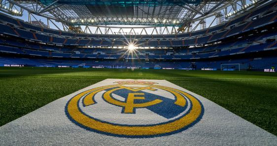
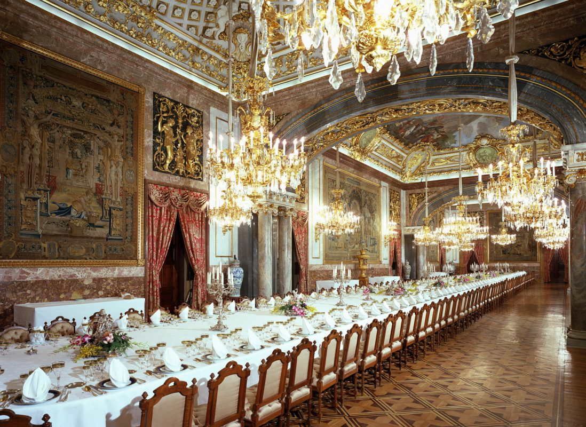
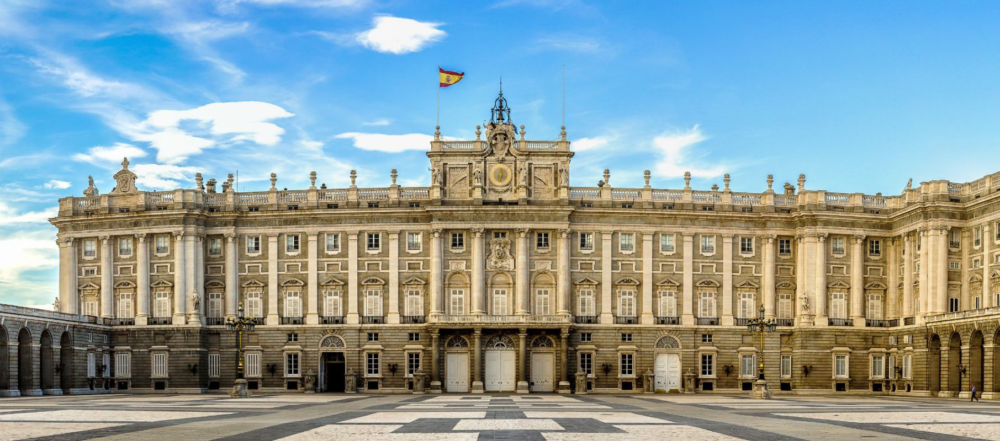

ملعب سانتياغو بيرنابيو
سانتياغو بيرنابيو، معلم مدريد الشهير والملعب الرئيسي لأعظم نادي في التاريخ ريال مدريد، يقع في قلب المدينة
ويعتبر وجهة سياحية رئيسية. افتتح هذا الملعب الأسطوري في عام 1947 وخضع لعدة عمليات توسيع وتجديد ليصبح
واحدًا من أكبر الملاعب في أوروبا بسعة تزيد عن 81,000 مقعد. يشهد ملعب بيرنابيو مباريات ريال مدريد الهامة
في الدوري الإسباني وبطولات دوري أبطال أوروبا، مما يضفي عليه هالة خاصة. للزوار فرصة استكشاف الملعب وخلف
الكواليس والاستمتاع بالمتحف الخاص بالنادي.
الملعب الأسطوري لنادي ريال مدريد، سانتياغو بيرنابيو، يعد معلمًا بارزًا ورمزًا حقيقيًا لعاصمة
إسبانيا. هذا الصرح الرياضي الضخم يقع في قلب مدريد، وتاريخه العريق يعكس إرث وإنجازات النادي الملكي.
افتتح ملعب بيرنابيو في عام 1947 وخضع منذ ذلك الحين لعدة مراحل توسيع وتحديث كبيرة، ليصبح واحدًا من
أضخم وأحدث الملاعب في العالم. بسعة تتجاوز 81,000 مقعد، يشهد هذا الصرح الرياضي الأسطوري العديد من
مباريات ريال مدريد الحاسمة في الدوري الإسباني ودوري أبطال أوروبا.
للزوار فرصة لاستكشاف الملعب والتعرف على تاريخه المجيد. يمكنهم جولة خلف الكواليس لرؤية غرف خلع ملابس
اللاعبين والتمتع بزيارة المتحف الخاص بالنادي، الذي يحتوي على الكؤوس والألقاب التي حققها ريال مدريد
عبر السنوات.
بمشاهدة مباريات ريال مدريد في هذا الملعب الأسطوري، يشعر المعجبون وكأنهم جزء من تاريخ الفريق العريق.
سانتياغو بيرنابيو هو ليس مجرد ملعب كرة قدم؛ إنه رمز لعظمة ريال مدريد وحضارة مدريد الفريدة.
للزوار فرصة لاستكشاف هذا الملعب الأسطوري والتعرف على ما وراء الكواليس. يمكنهم جولة خلف الكواليس
لرؤية غرف خلع ملابس اللاعبين والتمتع بزيارة المتحف الخاص بالنادي، الذي يحتوي على الكؤوس والألقاب
التي حققها ريال مدريد عبر السنين.
سانتياغو بيرنابيو ليس مجرد ملعب كرة قدم؛ إنه رمز لعظمة ريال مدريد وحضارة مدريد الفريدة. هذا الصرح
الرياضي الأسطوري هو قلب مدريد النابض بكرة القدم.

يشهد هذا الصرح الرياضي العديد من المباريات الحاسمة لنادي ريال مدريد في الدوري الإسباني ودوري أبطال
أوروبا. هنا تتجلى العظمة والإنجازات التاريخية للفريق الملكي، ويشعر المعجبون بأنهم جزء من هذا التاريخ
العريق. زوار ملعب سانتياغو بيرنابيو لديهم فرصة استثنائية للتعرف على تاريخ وإنجازات ريال مدريد في المتحف
الخاص بالنادي داخل الملعب.
في هذا المتحف المتميز، يمكن للزوار الاطلاع على عرض مفصل لجميع البطولات والألقاب التي حققها ريال مدريد
عبر السنين. سيجدون هناك:
كأس دوري أبطال أوروبا: ريال مدريد هو أكثر أندية دوري الأبطال تتويجًا بهذه البطولة، حيث فاز بها 14 مرة.
كأس الليغا (الدوري الإسباني): ريال مدريد هو أكثر أندية الليغا تتويجًا بهذا اللقب بـ 35 لقبًا.
كأس ملك إسبانيا: ريال مدريد هو ثاني أكثر الأندية الإسبانية تتويجًا بهذه البطولة برصيد 19 لقب.
كأس السوبر الإسباني: ريال مدريد فاز بهذا اللقب 12 مرة.
إضافة إلى ذلك، يضم المتحف مقتنيات أخرى مثل أحذية اللاعبين والكرات المستخدمة في المباريات التاريخية. هذه
المقتنيات تغمر الزائر بأجواء الإنجازات والبطولات التي حققها ريال مدريد عبر العق

قصر مدريد الملكي
قصر مدريد الملكي هو موطن العائلة المالكة الإسبانية والموقع الرسمي لملك إسبانيا. يُعتبر أكبر قصر ملكي
مأهول في العالم، إذ يبلغ إجمالي مساحته 135,000 متر مربع. تم بناء هذا القصر الفخم في القرن الثامن عشر على
أنقاض قصر قديم أكثر تواضعًا.
قصر مدريد الملكي هو قصر ملكي ضخم يقع في وسط مدينة مدريد، عاصمة إسبانيا. بُني هذا القصر الرائع خلال
القرن الثامن عشر تحت حكم الملك فيليب الخامس، وتم إنهاء بنائه في عام 1755.
يغطي القصر مساحة هائلة تبلغ 135,000 متر مربع، مما يجعله أكبر قصر ملكي مأهول في أوروبا. يضم القصر
3,418 غرفة، بما في ذلك غرف الاستقبال الملكية، والمكتبة الضخمة، ومسرح الأوبرا الخاص بالقصر. تتميز
واجهة القصر بطراز الباروك الإسباني مع الكثير من النقوش والزخارف المعقدة والرائعة.
تحيط بالقصر حدائق ممتدة على مساحة 20 هكتار، تضم نوافير فخمة وتماثيل فنية رائعة. هذه الحدائق الجميلة
تضفي جمالاً طبيعيًا رائعًا على المبنى الضخم.
على الرغم من أن القصر لم يعد يُستخدم كمقر إقامة للعائلة المالكة الإسبانية حاليًا، إلا أنه يفتح
أبوابه للجمهور كمتحف ملكي. يجذب هذا القصر الفخم الملايين من الزوار سنويًا الذين يأتون لإعجاب بروعة
تصميمه المعماري وللتعرف على تاريخه الطويل والمثير.
بكل تأكيد، يُعد قصر مدريد الملكي واحدًا من أهم المعالم الثقافية والتاريخية في إسبانيا، ويستحق زيارة
كل من يأتي إلى مدريد. لقصر له واجهة باروكية رائعة ويتميز بطراز معماري فاخر. تم تصميمه بحيث يشكل
مجموعة من المباني المترابطة، مما يخلق مساحات داخلية واسعة ومذهلة. داخل القصر، توجد 3,418 غرفة مختلفة
الأحجام والأغراض، تشمل قاعات الاستقبال والصالونات والمكاتب والمتاحف والمسارح والكنائس والمطابخ
والمرافق الخدمية.
أبرز ما يمكن رؤيته داخل القصر هو القاعات الضخمة المزينة بالنقوش والزخارف الذهبية الفاخرة. تضم هذه
القاعات مجموعة هائلة من اللوحات والتحف الفنية النادرة والثمينة. تشمل هذه التحف تماثيل، ومجسمات،
ولوحات جدارية، وأثاث فاخر، وسجاد فاخر، وأواني خزفية فريدة.

إن قصر مدريد الملكي هو نموذج رائع للفن المعماري الإسباني خلال القرن الثامن عشر. يعكس الترف والرفاهية
التي تمتع بها الملوك الإسبان في ذلك الوقت. ويظل واحدًا من أهم المعالم السياحية والثقافية في مدريد وفي
إسبانيا بأكملها.
بالإضافة إلى هذا الفخامة الداخلية، يتميز القصر بحدائقه الواسعة والمنسقة بعناية فائقة. تضم هذه الحدائق
نافورات رائعة، وممرات ممشوة، وأشجار مثمرة، وأزهار ملونة. وتعتبر هذه الحدائق مكانًا مثاليًا للاسترخاء
والاستمتاع بالطبيعة.
داخل القصر أيضًا، يوجد مسرح ملكي يستضيف باستمرار عروض الأوبرا والموسيقى الكلاسيكية. كما يوجد مكتبة ملكية
فريدة تضم مجموعة هائلة من الكتب والمخطوطات النادرة.
بشكل عام، يعد قصر مدريد الملكي نموذجًا رائعًا للعمارة الباروكية الفاخرة، ويشكل إرثًا ثقافيًا وتاريخيًا
عظيمًا لإسبانيا والعالم. إنه وجهة سياحية رئيسية تجذب ملايين الزوار سنويًا لاستكشاف عظمته المعمارية
والفنية.
